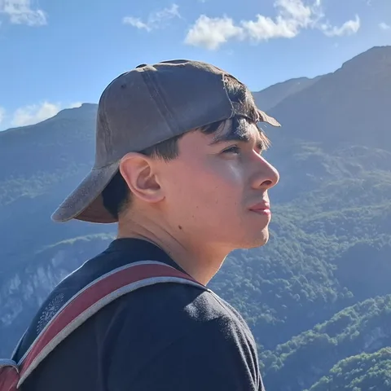

Franco SolerSistemas
Desarrollo software y estudio sistemas en Chubut. Entrá a mi mundo: vas a ver dónde estoy ahora y podés hablar conmigo.

Tu navegador no muestra el mundo 3D. Igual podés hablar conmigo.
Franco está en la oficina
--:-- · Hora ArgentinaArrastrá para girar
Rueda para acercar
Proyectos con gente y problemas reales.
Analista Programador y estudiante avanzado de Licenciatura en Sistemas.
Haciendo del mundo un lugar mejor, pero no tanto...
Soy Franco Martin Soler, tengo 22 años y vivo en Trelew, Chubut. Me recibí de Analista Programador en 2025 y estoy cursando 4.º año de la Licenciatura en Sistemas en la UNPSJB.
- Título
- Analista Programador · 2025
- Cursando
- Licenciatura en Sistemas · UNPSJB · 4.º año
- Secundario
- Técnico en Informática · ESETP N.º 724 · 2022
- Base
- Trelew, Chubut, Argentina

Trabajos
- Ahora
Legislatura de Chubut
Trabajando en lo mío. Es mi primer año ahí.
- 1 año
Oficina de Desarrollo de Software
Subsecretaría de Innovación de Chubut.
- 2 años y medio
Empleado administrativo
En una empresa comercial. Mi primer trabajo.
Eventos y capacitaciones
- 2026
Universidad Abierta UNPSJB
Organizador: acerco la carrera de Sistemas a quienes están por empezar.
- 2025
NASA Space Apps Challenge
Sede Puerto Madryn. Mención honorable y nominación global con AtmOS.
- 2025
Proyecto final · Analista Programador
Sistema de Retroalimentación Académica para la Facultad de Ingeniería, Sede Trelew.
Cuando no programo, saco fotos.
Una selección de lo que voy sacando con el celular.
Construyo lo que el problema necesita.
Herramientas usadas en proyectos
No hay un stack fijo: elijo según lo que haya que construir